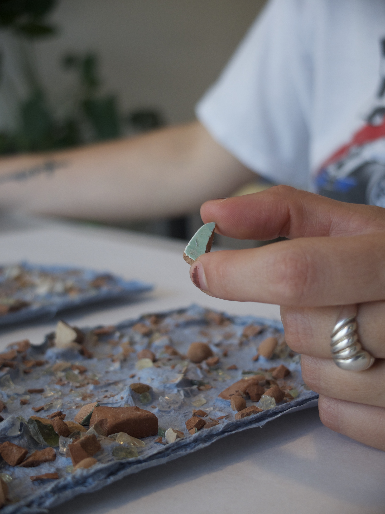
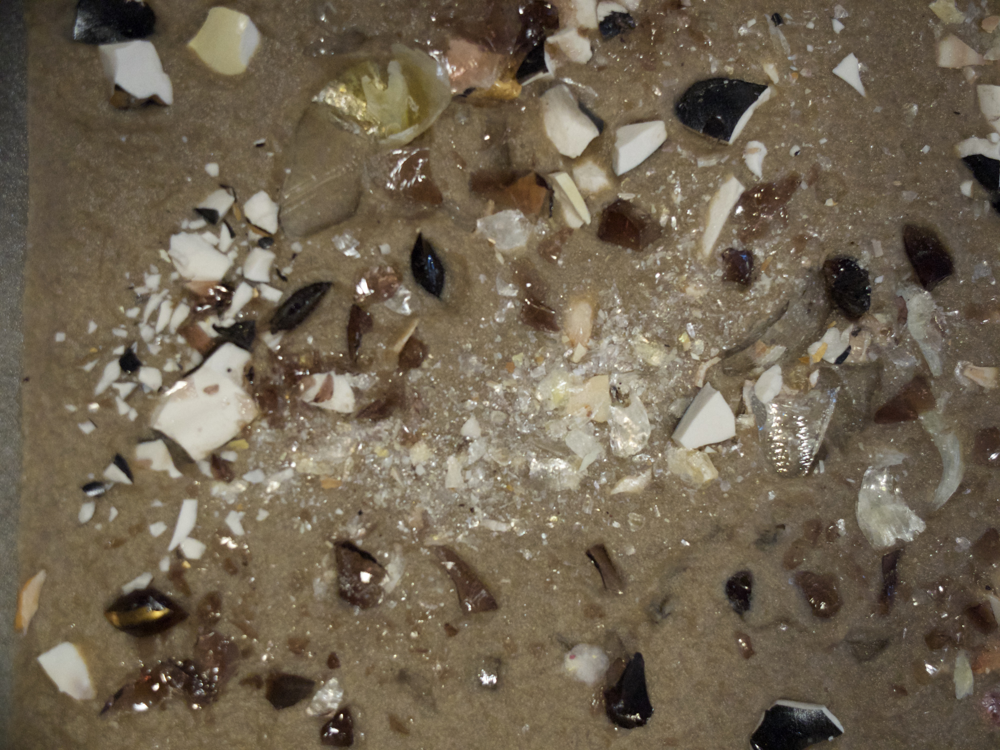
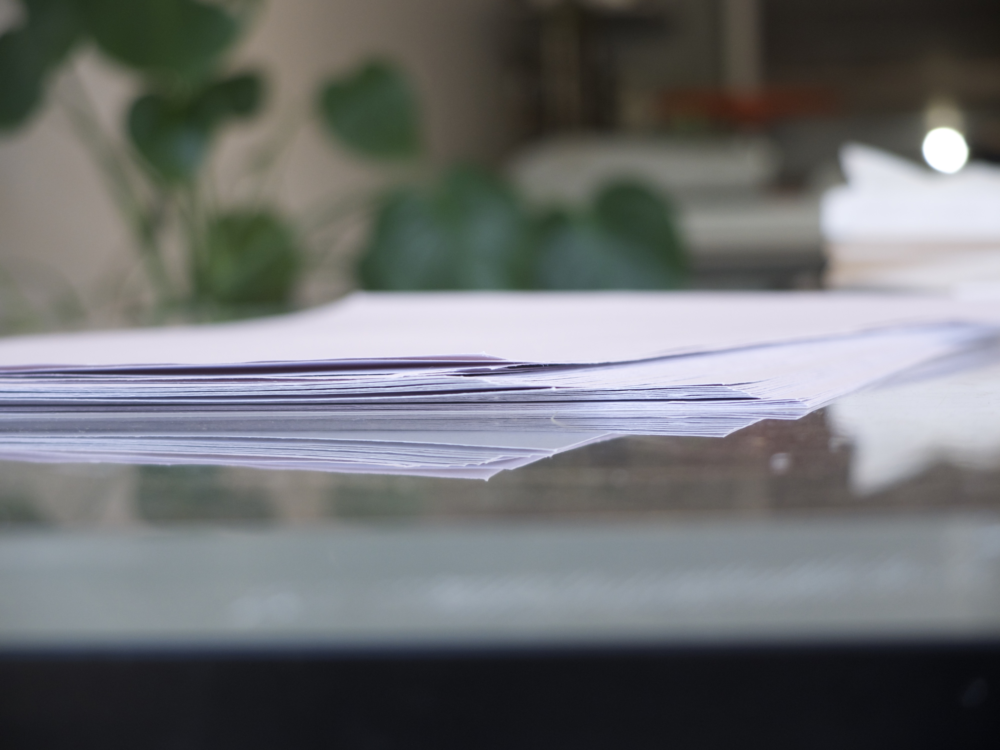
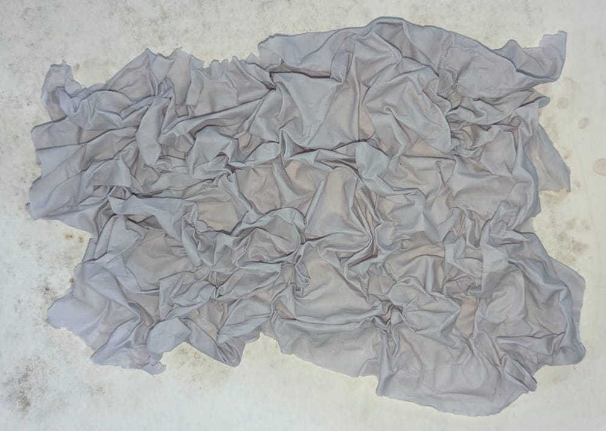
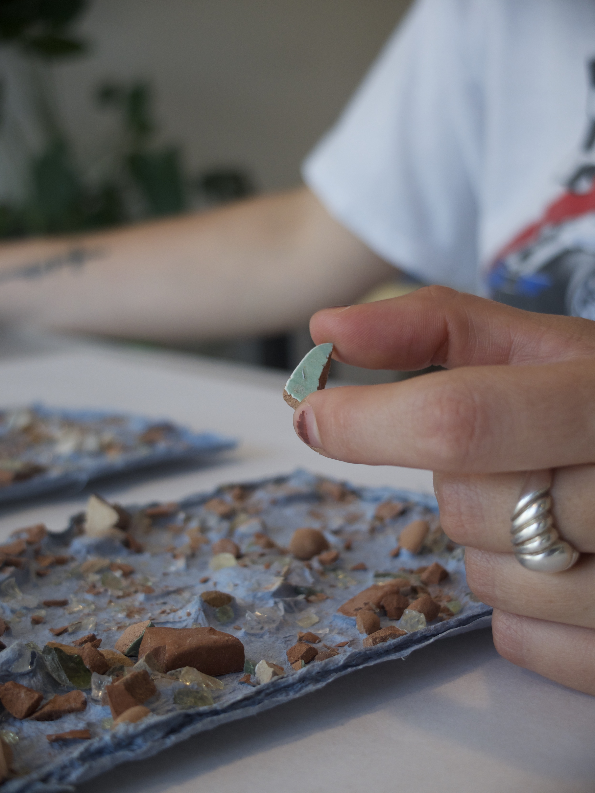
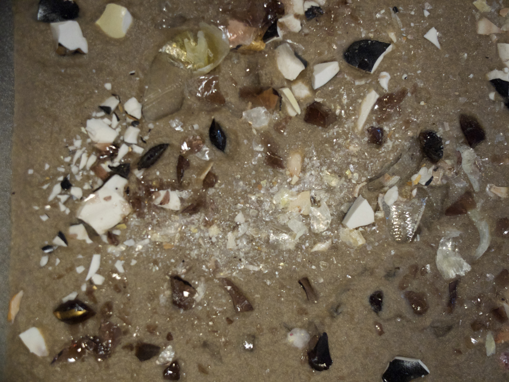
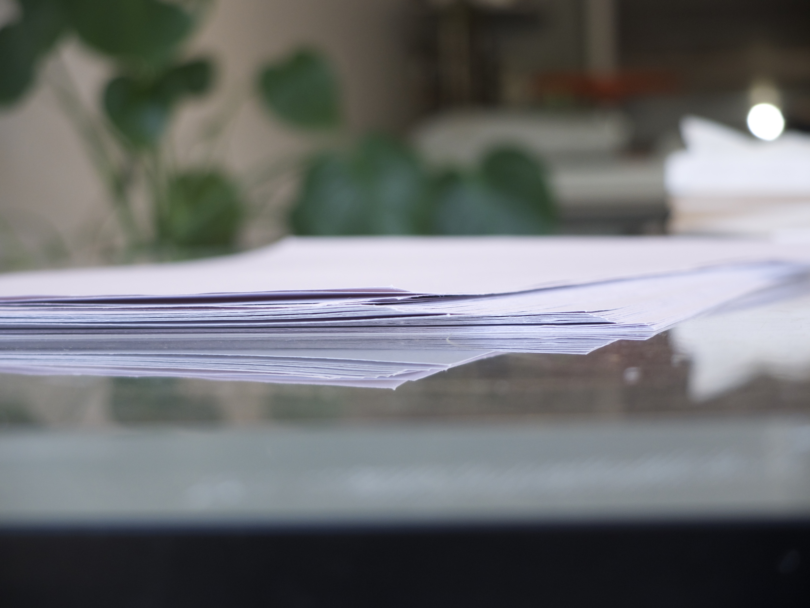
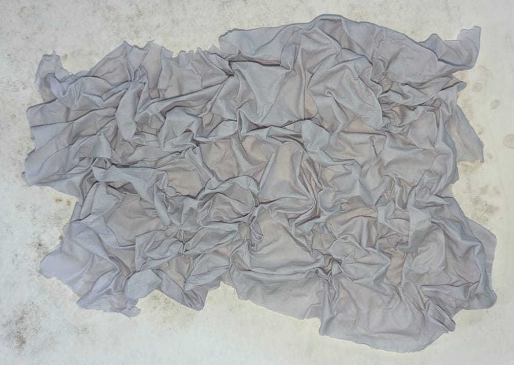

Supported by a Jeunes Volontaires grant, where the well fell to thirst is a handmade artist’s book that brings together papermaking and multilingual poetry. I transformed old clothing into pulp and then paper. The pages hold a long poem—written in Italian, English, and French, and Italian—that explores grief and place through three languages, as an experiment in material and poetic form.
The impetus for the macaronic poem came from an experiment led by Sarah Burgoyne in her Poetry Studio. I am also grateful to Atelier Retailles, Atelier Écluse, and Atelier Circulaire for the use of their equipment and their expert support; to Victor Martins of Winter Garden Web Design for help with this website; and especially to Misha Solomon, my mentor in this project, whose generous guidance (and prompt, hilarious emails) helped me navigate the whole process.